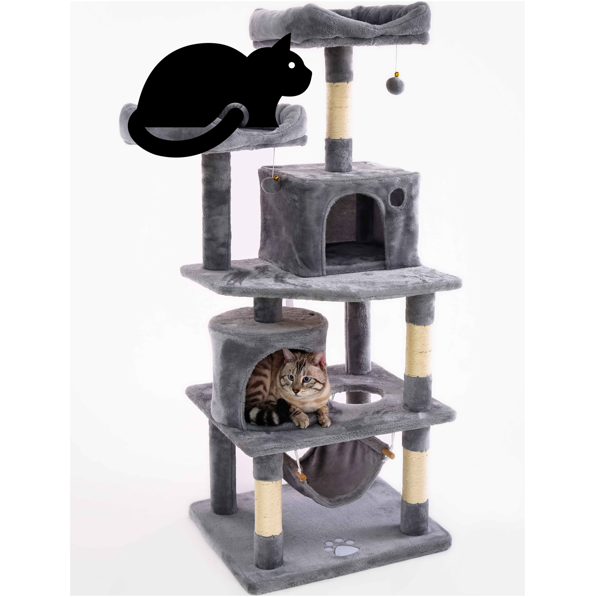
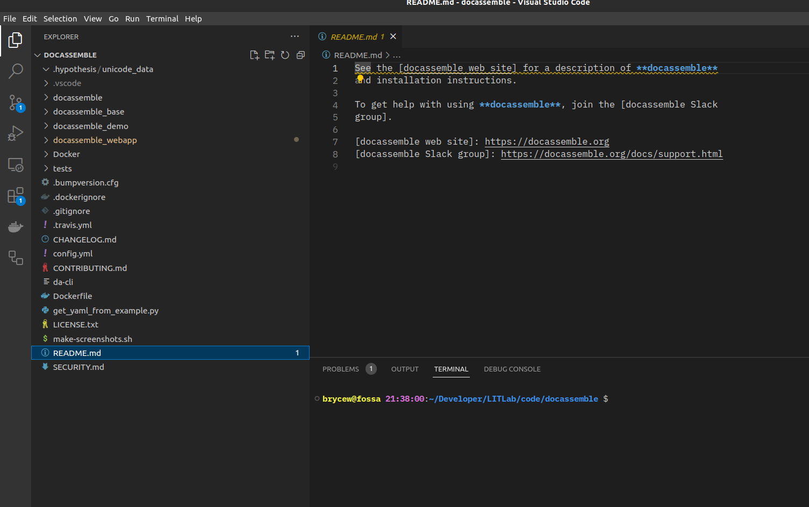
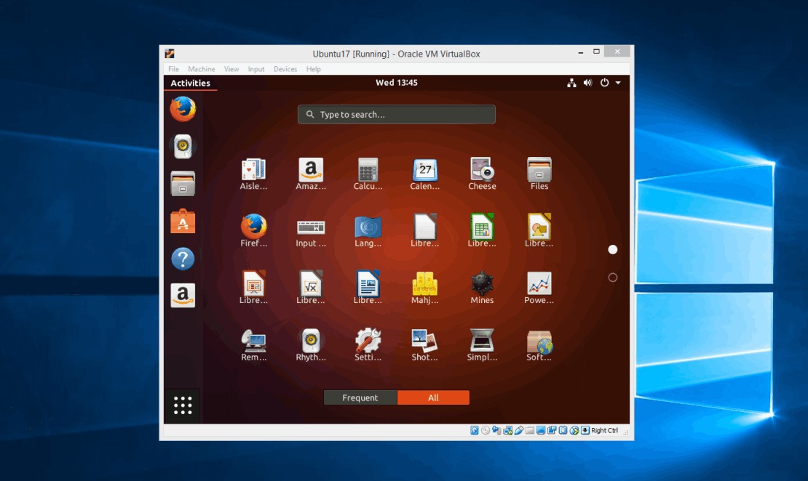
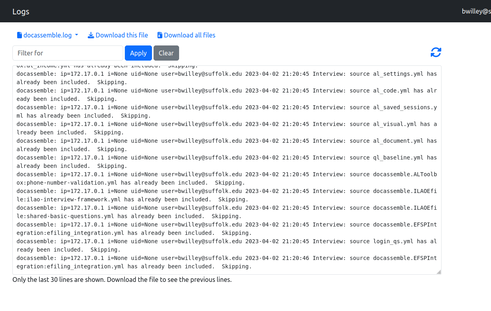

Hacking Docassemble Internals
Bryce Willey
@brycew@publicinterest.townhttps://brycewilley.xyz/docacon23-slides
Why hack?

Here comes the firehose
Don't memorize all of this: it's in the docs
Some starting assumptions:
- docassemble
- python
- Folder structures
Don't have time to cover:
- GitHub
- HTML
- Command Line / Shell / Bash
Install an editor
I recommend VSCode, but anything works
Download Docassemble
# If on WSL2 or Linux (no need on Mac)
sudo apt install git
git clone https://github.com/jhpyle/docassemble
Install Docker
- On Ubuntu Linux
- On Mac
- On Windows
- Setup WSL 2 and then install on WSL's Ubuntu (Recommended)
- With docker desktop
Docker terminology
- container
- image
- volume


Run Docker
docker pull jhyple/docassemble
docker run \
--env WWWUID=`id -u` \
--env WWWGID=`id -g` \
--name mydocassemble
-p 80:80 \
-v ./docassemble:/tmp/docassemble \
-d \
jhpyle/docassemble
Some extra tips
docker run \
--cap-add SYS_PTRACE \
--memory="4gb" \
... # same as before
Our change: more logs
The Key components to hacking
- Exploring and Navigating the code
- reading the code
- surgical change
Open a shell in docassemble
docker exec -it mydocassemble /bin/bash
su www-data
source /usr/share/docassemble/local3.10/bin/activate
cd /tmp/docassemble
pip install --no-deps --no-index \
--force-reinstall --upgrade \
./docassemble_base ./docassemble_webapp ./docassemble_demo ./docassemble
touch /usr/share/docassemble/webapp/docassemble.wsgi
Other systems that you might deal with
- Flask
- Git (used from in docassemble)
- Pikepdf
- sqlalchemy
- redis
- celery